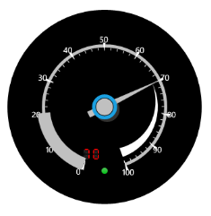

Essential Circular gauge Windows Phone facilitates usage of a Digital gauge component within Circular gauge component to display the character or numeric value of the pointed reading in the Circular gauge.
The following code snippet illustrates on how to set a Digital gauge component in a Circular gauge.
|
[XAML]
<syncfusion:CircularGauge ShowDigitalValue="True" Height="Auto" Width="Auto" VerticalAlignment="Bottom" Radius="130" Name="circularGauge1" FrameType="Circular" Margin="3" > < syncfusion:CircularGauge.DigitalValue> < syncfusion:DigitalGauge CharacterCount="2" Foreground="Red" Background="Transparent" CharacterType="SegmentFourteen" InnerFrameBrush="Transparent" OuterFrameBrush="Transparent" CharacterHeight="15" Margin="-30,150,0,0" VerticalAlignment="Center" HorizontalAlignment="Center" Value="70" SegmentBrush="Red"/> </ syncfusion:CircularGauge.DigitalValue> </syncfusion:CircularGauge.DigitalValue> </syncfusion:CircularGauge> |

Figure 46: Digital gauge hosting in Circular Gauge